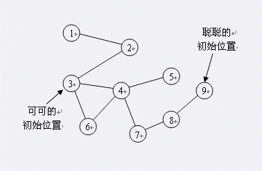

| F.A.Qs | Home | Discuss | ProblemSet | Status | Ranklist | Contest | 入门OJ | ModifyUser Xeonacid | Logout | 捐赠本站 |
|---|
| F.A.Qs | Home | Discuss | ProblemSet | Status | Ranklist | Contest | 入门OJ | ModifyUser Xeonacid | Logout | 捐赠本站 |
|---|
【样例说明1】
开始时，聪聪和可可分别在景点1和景点4。
第一个时刻，聪聪先走，她向更靠近可可(景点4)的景点走动，走到景点2，然后走到景点3；假定忽略走路所花时间。
可可后走，有两种可能：
第一种是走到景点3，这样聪聪和可可到达同一个景点，可可被吃掉，步数为1，概率为 。
第二种是停在景点4，不被吃掉。概率为 。
到第二个时刻，聪聪向更靠近可可(景点4)的景点走动，只需要走一步即和可可在同一景点。因此这种情况下聪聪会在两步吃掉可可。
所以平均的步数是1* +2* =1.5步。

对于所有的数据，1≤N,E≤1000。
对于50%的数据，1≤N≤50。